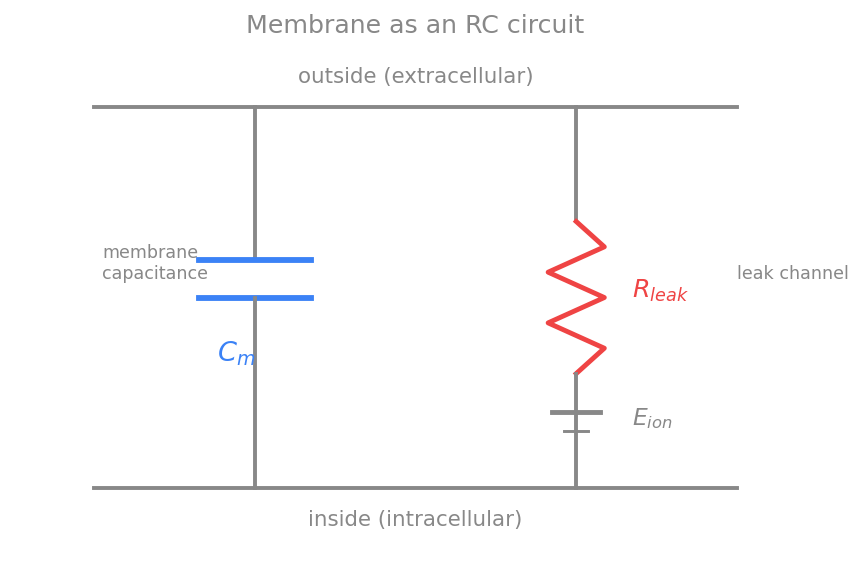
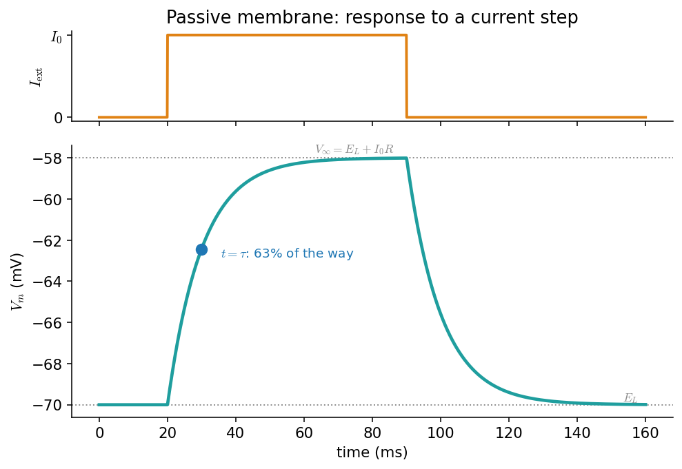
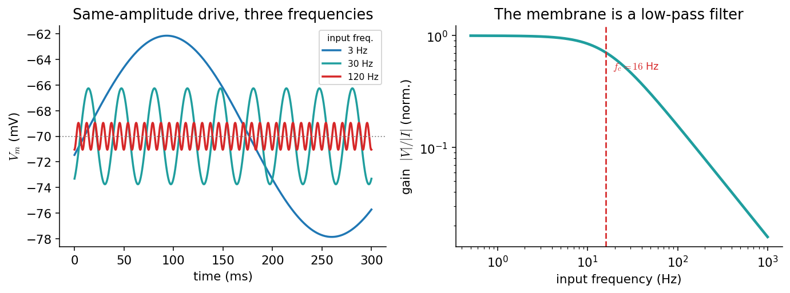

غشای غیرفعال: مدارِ RC
در فصلِ پتانسیل استراحت دیدیم که غشا در حالتِ استراحت چه ولتاژی دارد. اکنون میپرسیم: اگر جریانی به سلول تزریق کنیم، ولتاژ چگونه در زمان پاسخ میدهد؟ تا وقتی کانالهای وابسته به ولتاژ خاموشاند (یعنی زیرِ آستانه)، پاسخِ غشا شگفتآور ساده است: غشا مانندِ یک مدارِ الکتریکیِ RC رفتار میکند. این سادهترین و پرکاربردترین مدلِ نورون است و — همانطور که خواهیم دید — استخوانبندیِ همهٔ مدلهای پیچیدهترِ فصلهای بعد نیز هست.
در پایانِ این فصل خواهید توانست
- غشا را با یک خازن، یک مقاومتِ نشتی و یک باتری مدل کنید.
- معادلهٔ موازنهٔ جریان را بنویسید و آن را بهصورتِ عددی حل کنید.
- ثابتِ زمانیِ \(\tau=R_mC_m\) را تعریف کنید و از روی پاسخِ پلهای بخوانید.
- توضیح دهید چرا غشا یک صافیِ پایینگذر است و بسامدِ برشِ آن را بیابید.
غشا یک مدارِ RC است
دولایهٔ لیپیدی یک عایقِ نازک میانِ دو محلولِ رساناست، و هر عایقی که میانِ دو رسانا قرار گیرد یک خازن میسازد. پس غشا یک ظرفیتِ خازنیِ \(C_m\) دارد و میتواند بار را روی دو سطحِ خود نگه دارد. در کنارِ آن، کانالهای نشتی مسیرهایی برای عبورِ بار فراهم میکنند و نقشِ یک مقاومتِ \(R_m\) (یا رساناییِ \(g_L=1/R_m\)) را بازی میکنند؛ و چون هر دسته کانال یک پتانسیلِ تعادل دارد، یک باتریِ \(E_L\) نیز در این شاخه هست. بنابراین کوچکترین مدلِ غشا، یک خازن بهموازاتِ یک شاخهٔ مقاومت–باتری است.

مدلِ مداریِ سادهشدهٔ غشا: خازنِ \(C_m\) بهموازاتِ یک شاخهٔ نشتی شاملِ مقاومتِ \(R_m\) و باتریِ \(E_L\).
معادلهٔ موازنهٔ جریان
قانونِ پایستگیِ بار همهچیز را تعیین میکند: جریانی که به غشا میرسد یا بارِ خازن را تغییر میدهد یا از شاخهٔ نشتی میگذرد. جریانِ خازنی \(C_m\,\frac{dV}{dt}\) و جریانِ نشتی \(g_L(V-E_L)\) است، پس با جریانِ تزریقیِ \(I_{\text{ext}}\):
این معادله، استخوانبندیِ همهٔ مدلهای نورونیِ این کتاب است. مدلِ هاجکین–هاکسلی، مدلهای سادهشده و حتی مدلهای جمعیتی، همگی شکلهایی از همین موازنهاند؛ تنها چیزی که عوض میشود، توصیفِ جریانهای یونی است. اینجا سادهترین حالت را داریم: یک جریانِ نشتیِ خطی.
حلِ عددیِ این معادله با همان روشِ اویلرِ پیشرو چند خط بیش نیست:
import numpy as np
# passive (leaky) membrane: C dV/dt = -g_L (V - E_L) + I_ext
C = 100.0 # pF
g_L = 10.0 # nS -> tau = C / g_L = 10 ms
E_L = -70.0 # mV
tau = C / g_L # ms
def simulate(I_ext, T=160.0, dt=0.05, V0=E_L):
"""Forward-Euler integration of the passive membrane; I_ext(t) in pA."""
t = np.arange(0, T, dt)
V = np.empty_like(t); V[0] = V0
for n in range(len(t) - 1):
dV = (-g_L * (V[n] - E_L) + I_ext(t[n])) / C
V[n + 1] = V[n] + dV * dt
return t, V
step = lambda tt: 120.0 if 20 <= tt < 90 else 0.0 # a 120 pA current step
t, V = simulate(step)
پاسخ به پلهٔ جریان و ثابتِ زمانی
برای یک جریانِ ثابتِ \(I_0\)، معادله یک جوابِ دقیقِ نمایی دارد. اگر سلول از \(E_L\) آغاز کند:
دو نکته: نخست، ولتاژِ پایا برابرِ \(V_\infty = E_L + I_0 R_m\) است — یعنی پاسخ با جریان خطی است (قانونِ اهم). دوم، سرعتِ رسیدن به این مقدار را ثابتِ زمانیِ \(\tau\) تعیین میکند: پس از یک \(\tau\)، ولتاژ ۶۳٪ راه را رفته است. مقدارِ نوعیِ \(\tau\) چند تا چند ده میلیثانیه است و همین، مقیاسِ زمانیِ پاسخهای زیرآستانهٔ نورون را مشخص میکند.

پاسخِ غشای غیرفعال به یک پلهٔ جریان. بالا: جریانِ تزریقی. پایین: ولتاژ بهصورتِ نمایی به سمتِ \(V_\infty=E_L+I_0R_m\) بالا میرود و پس از قطعِ جریان، نمایی به \(E_L\) بازمیگردد. نقطهٔ آبی، لحظهٔ \(t=\tau\) را نشان میدهد که در آن ولتاژ ۶۳٪ راه را پیموده است.
پس از قطعِ جریان، ولتاژ با همان \(\tau\) به استراحت بازمیگردد. توجه کنید که غشا هیچ حافظهای فراتر از \(\tau\) ندارد: هر رویدادِ ورودی پس از چند \(\tau\) کاملاً فراموش میشود. همین ویژگی، غشای غیرفعال را به یک انباشتگرِ نشتدار (leaky integrator) بدل میکند — ایدهای که مستقیماً به مدلِ نورونِ یکپارچهوشلیک میانجامد.
غشا یک صافیِ پایینگذر است
اگر بهجای یک پله، جریانی نوسانی با بسامدِ \(f\) تزریق کنیم، همان معادلهٔ خطی میگوید که ولتاژ نیز با همان بسامد نوسان میکند، اما با دامنهای که به بسامد بستگی دارد. بهرهٔ دستگاه (نسبتِ دامنهٔ ولتاژ به دامنهٔ جریان) چنین است:
برای بسامدهای کوچک (\(2\pi f\tau \ll 1\)) بهره ثابت و برابرِ \(R_m\) است؛ اما برای بسامدهای بزرگ، خازن «فرصتِ» شارژشدن نمییابد و بهره مانندِ \(1/f\) افت میکند. مرزِ این دو رژیم، بسامدِ برش \(f_c = 1/(2\pi\tau)\) است. بهبیانِ دیگر، غشا یک صافیِ پایینگذر است: تغییراتِ آهسته را میگذراند و تغییراتِ تندِ ورودی را صاف میکند.

غشا بهمثابهٔ صافیِ پایینگذر. چپ: پاسخ به سه جریانِ نوسانیِ همدامنه با بسامدهای متفاوت؛ هرچه بسامد بالاتر، دامنهٔ ولتاژ کوچکتر. راست: منحنیِ بهره بر حسبِ بسامد؛ زیرِ بسامدِ برشِ \(f_c\approx16\) هرتز بهره تقریباً ثابت است و بالای آن مانندِ \(1/f\) افت میکند.
# amplitude of the subthreshold voltage response to a sinusoidal current, vs frequency
freq = np.logspace(-0.3, 3, 400) # Hz
gain = 1.0 / np.sqrt(1 + (2*np.pi*freq*tau/1000)**2) # tau in ms -> /1000
f_c = 1000.0 / (2*np.pi*tau) # cutoff frequency in Hz (≈ 16 Hz)
این «پایینگذر بودن» پیامدهای مهمی برای پردازشِ اطلاعات دارد: نورون بهتنهایی نمیتواند به تغییراتِ بسیار سریعِ ورودی پاسخِ زیرآستانه بدهد، و همین، یکی از دلایلی است که چرا اطلاعاتِ سریع در مغز اغلب با زمانبندیِ اسپایکها کدگذاری میشود، نه با ولتاژِ زیرآستانه.
تمرینها
-
قانونِ اهم. با کدِ
simulate، پاسخِ پلهای را برای سه جریانِ \(I_0=60,120,240\) پیکوآمپر رسم کنید. نشان دهید که \(V_\infty-E_L\) با \(I_0\) خطی است و شیبِ آن \(R_m=1/g_L\) است. -
اندازهگیریِ \(\tau\). از یک شبیهسازیِ پلهای، ثابتِ زمانی را بهصورتِ عددی برآورد کنید (زمانی که ولتاژ به ۶۳٪ مقدارِ نهایی میرسد) و با \(C/g_L\) بسنجید.
-
صافی. غشا را با جریانهای نوسانیِ همدامنه در بسامدهای گوناگون بِرانید، دامنهٔ ولتاژِ پایا را اندازه بگیرید، و منحنیِ بهره را بازتولید کنید. تأیید کنید که در \(f_c=1/(2\pi\tau)\) بهره به \(1/\sqrt2\) برابرِ مقدارِ کمبسامد افت میکند.
-
انباشتگرِ نشتدار. به مدل یک آستانه بیفزایید: هرگاه \(V_m\) از یک مقدارِ آستانه گذشت، یک «اسپایک» ثبت کنید و \(V_m\) را به \(E_L\) بازنشانی کنید. این همان مدلِ یکپارچهوشلیکِ نشتدار (LIF) است؛ بسامدِ شلیک را بر حسبِ جریانِ ثابت رسم کنید.